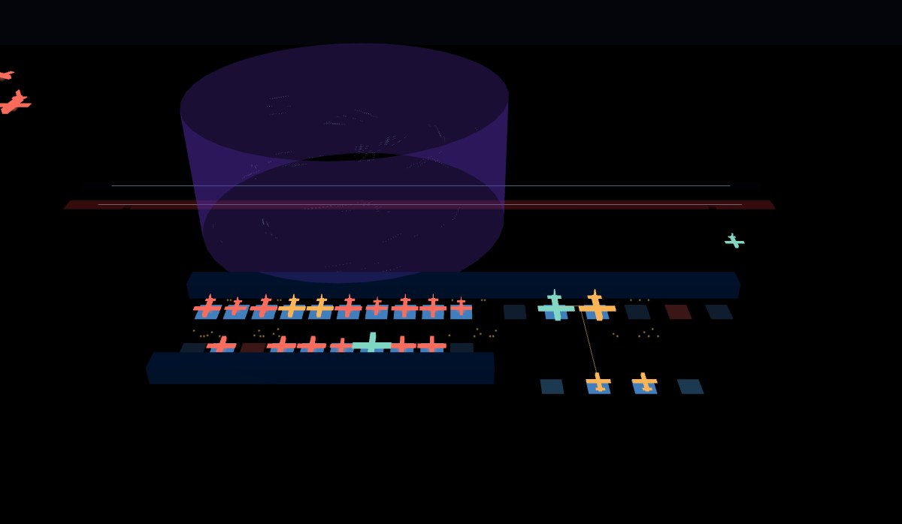
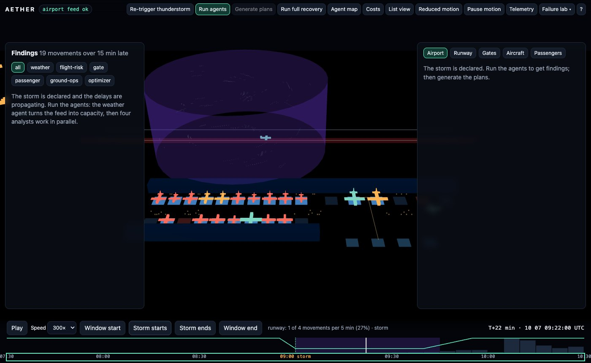
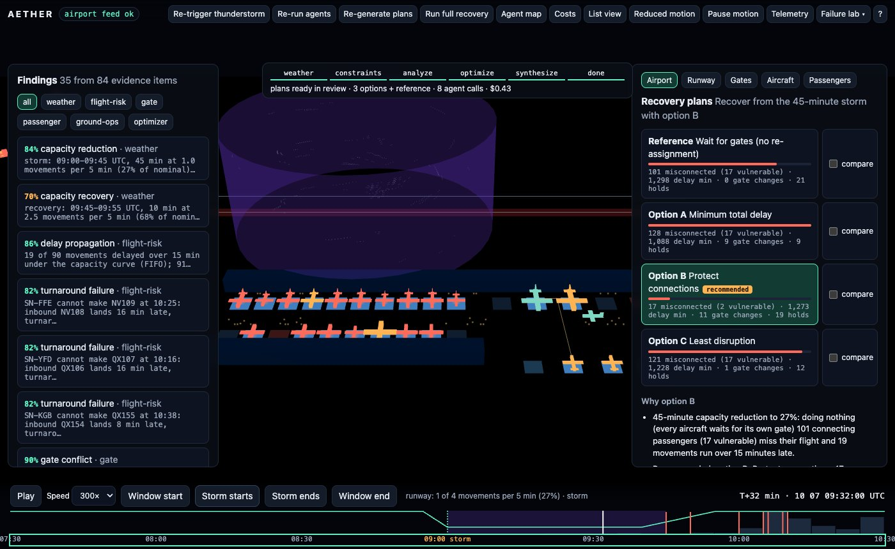
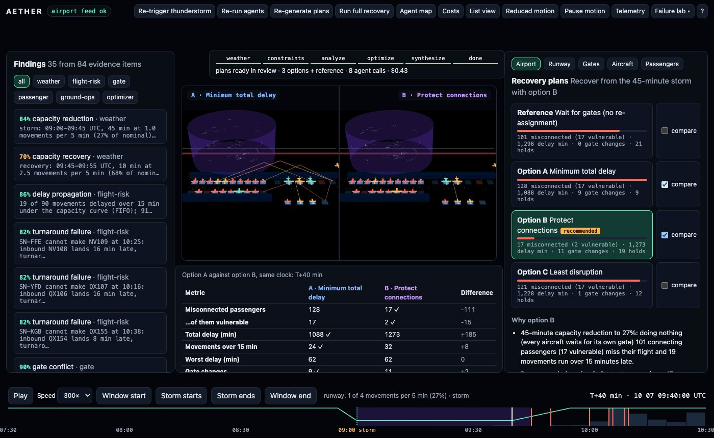
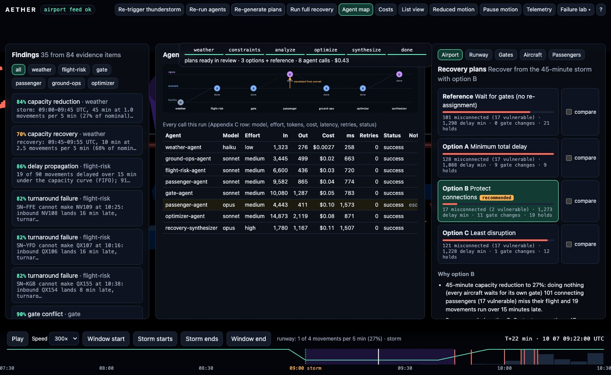
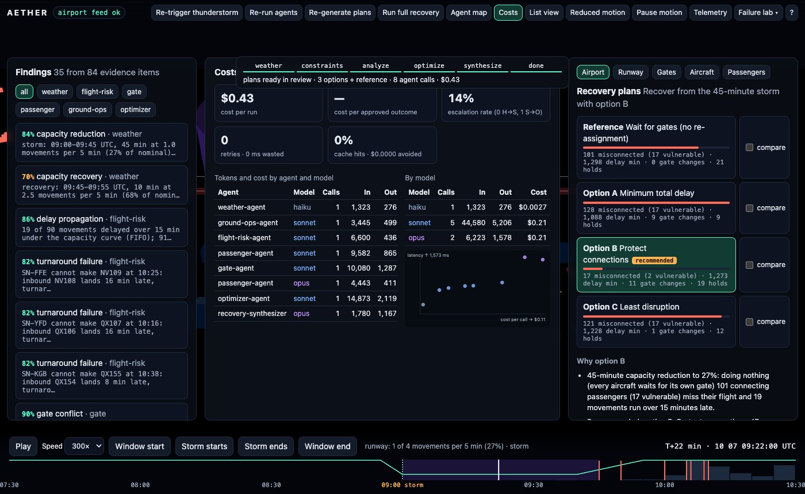
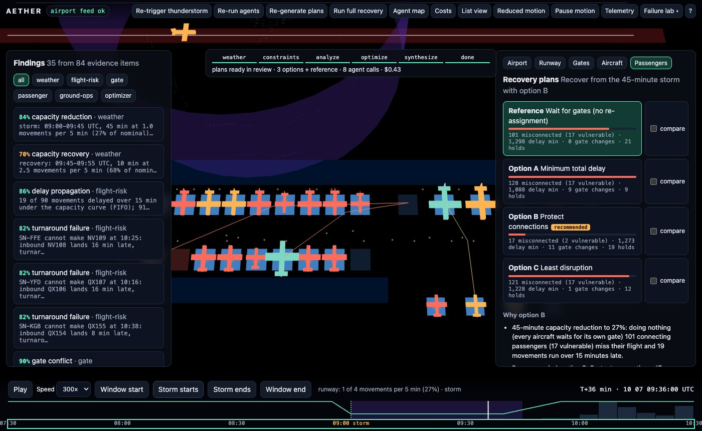
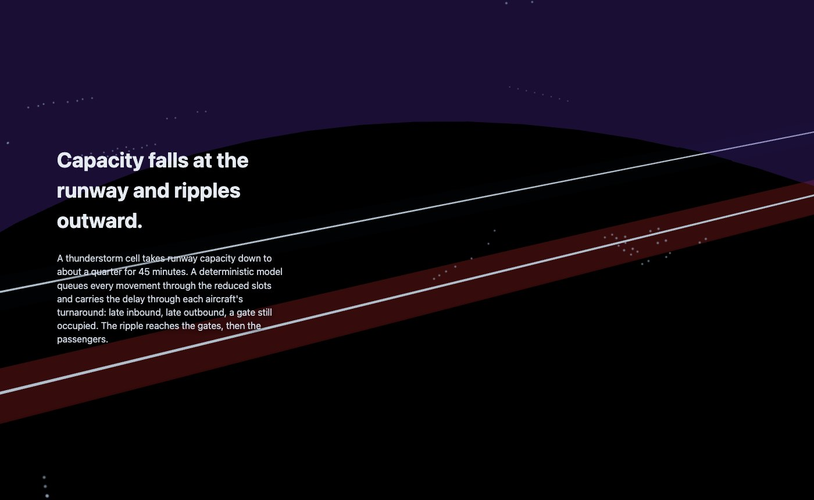

TypeScript · multi-agent · three.js · 2026-10
Which Plan Gets the Passengers Home?
A multi-agent airport disruption command center on a synthetic night: a thunderstorm takes runway capacity to a quarter, 19 of 90 movements run late, a weather agent and four parallel analysts read their own slices, and a real branch-and-bound gate solver produces three plans against a do-nothing reference. Waiting strands 101 connecting passengers; the recommended plan strands 17, for $0.43 of simulated model cost, with the plans compared in a synchronized split view and approved by a dispatcher.

Built from blueprint 02 of a written build book (Volume VI, Claude Code multi-agent + motion UI) as one vertical slice. Everything is synthetic: the airport, airlines, tails, cities, passengers, ground fleet and weather feed are generated by the repository. No model is called: each application agent is a deterministic analyzer, and a simulated provider charges it tokens by the size of what went in and out at a configured price table; routing, escalation, retries, circuit breaking, caching and the cost telemetry are real code paths covered by tests, and so is the gate solver. Not built: real model calls, OR-Tools or a proven-optimal MIP (the solver stops at a node cap on the demo instance), crew and baggage-system models, GSAP and MapLibre, Temporal, Kafka, Redis, Terraform and cloud deployment, SSO, billing, real weather feeds.
01 — The problem
A storm closes most of a runway for 45 minutes and everything downstream goes wrong at once: arrivals stack up, aircraft cannot leave on time, the gate someone needs is still occupied, ramp work stops for lightning, and connecting passengers miss their flights. One large model asked to reschedule that is both expensive and unaccountable. Can specialized agents each own a slice, can a solver rather than a sentence change the schedule, and can a dispatcher see what each plan costs before approving one?
The build book's rules for this volume: the cheapest model that can reliably do the task, structured JSON between agents instead of transcripts, never feed raw streams to the synthesis model, escalate only the narrow subproblem, record tokens and cost per agent, and keep a human approval gate. Blueprint 2 of ten, built as its demo scenario end to end, and the repository ships its own Claude Code configuration (agents, rules, hooks) as the book asks.
02 — What I built
A Next.js site that runs the whole workflow in a Web Worker on synthetic fixtures, plus a Fastify API on PostgreSQL that runs the same two workflow phases server-side, persists them and streams progress, started by one docker compose up.
- A synthetic airport: 90 movements, 225 connecting itineraries with 1,797 passengers, 30 gates, a ground fleet, a weather feed, a flight remark that says "ignore previous instructions" and a prompt-injection test to match.
- A deterministic constraint builder (
packages/domain): runway capacity from weather under the airport's operating rules, a slot queue that propagates delay through rotations, minimum connection times by gate pair, gate occupancy and conflicts, ground-resource peaks. - A gate solver: branch and bound with fail-first ordering and a warm start, checked against exhaustive search and against 20 randomized schedules.
- An agent runtime (
packages/agents): the book's agent contract as a JSON schema with a bundled checker, a router with per-tier escalation, retries with backoff, a circuit breaker, a cache, a deterministic simulated provider and the Appendix Cagent_invocationstelemetry with its dashboards. - The workflow: weather (haiku) → constraint builder → flight risk, gates, passengers and ground ops in parallel (sonnet) → optimizer calling the solver (sonnet) → synthesis on compact options (opus) → dispatcher approval.
- A motion layer: aircraft and ground vehicles in motion, a ripple from the runway to the gates and passengers, a storm cell with rain and lightning, a synchronized split view, a 90-minutes-either-side scrubber, reduced motion, pause, deep links, a list view and a telemetry HUD.
03 — How it was built
- 01
A calm airport, and a storm you declare
The generator writes one airport: 90 movements as 45 aircraft rotations, 225 connecting itineraries with 1,797 passengers (some with reduced mobility or travelling as unaccompanied minors), 30 stands (26 gates in three terminals plus four remote stands, two of the gates closed for maintenance), 36 ground vehicles and crews and a 37-observation weather feed. On the calm day every rotation sits at a compatible open gate without overlap and every connection works on schedule, which the tests check. The thunderstorm is not in the feed: it is the dispatcher's declared disruption, so the same airport can run a longer or shorter cell and the sensitivity of a plan is a real re-run.
const cap = capacityCurve(applyDisruption(sc.weather, disruption), 44); // 44 movements an hour = 3.67 per 5 min // storm buckets at 0.4 of nominal, recovery one movement per bucket, never above nominal - 02
Capacity falls and the delay carries through the rotation
Before any agent runs, a deterministic queue serves every movement through the reduced 5-minute slots, arrivals first, and an aircraft cannot leave before its inbound plus its turnaround. 19 of the 90 movements end up more than 15 minutes late and the gates start to overlap: the same gate is wanted by an aircraft that is late to leave and one that is late to arrive. Doing nothing is itself a plan, so the do-nothing reference makes each aircraft wait for its own gate: 21 holds, 1,298 delay minutes.
- 03
Weather on haiku, four analysts in parallel
The raw window is 12,990 tokens of schedules, manifests and telemetry. The weather agent (haiku) reads 1,323 of them and returns bounded capacity with confidence bands; the flight-risk, gate, passenger and ground-ops analysts (sonnet) each read their own slice, 6,600, 10,080, 9,582 and 3,445 tokens, and return 35 findings in the contract's shape: 13 gate conflicts, three turnaround failures, the lightning ramp stop, resource peaks over fleet capacity, eight misconnection cohorts with the vulnerable ones first.
- 04
Escalate the subproblem, and the cheap tier was five passengers short
The passenger agent is only 55% sure about the cross-terminal connections because it does not have the terminal transfer times, so the runtime escalates that subproblem: 4,443 tokens instead of 9,582, to opus. Opus found something the cheap tier could not: one 5-passenger connection from gate C1 to B7 has a gap of 50 minutes, which the generic cross-terminal rule (50) calls made and the real rule (51) does not. The summary says 101 misconnected, not 96, and it equals the do-nothing option. My first version of the escalation only re-examined itineraries already judged missed, so it never saw that one; the fix sends every itinerary into any flight with an unresolved connection, and the subproblem grew from 1,355 tokens to 4,443.
compact: (i, prev) => { const out = new Set(prev.findings.find((f) => f.type === 'misconnection_summary')?.data.uncertainOutbounds ?? []); const its = i.itineraries.filter((x) => out.has(x.outbound)); // whole cohorts of the unresolved flights, not the manifest ... } - 05
A solver, not a sentence
The optimizer agent's contract is to call the solver; a model never changes the schedule in text. Each rotation in conflict picks a gate and a hold from a finite domain. Hard constraints: no two rotations overlap on a gate, gates must be compatible and open. Objective: a weighted sum of gate changes, remote-stand passengers, holds and the marginal misconnections a choice causes. It is depth-first branch and bound with fail-first ordering, a forward-checked bound and a warm start from the do-nothing plan, so it can never return something worse than waiting. On small instances it equals exhaustive search; on the demo's 45 rotations all three strategies stop at the 8,001-node cap and say so (best found, not proven optimal), and the synthesizer raises that as a policy flag.
if (c + lb >= bestCost) return; // lb: every unassigned rotation's cheapest option that still fits for (const o of domain[pick]) { // pick: the rotation with the fewest feasible options if (++nodes > nodeCap) { cut = true; return; } // best found, not proven optimal ... - 06
Three plans, and what each one costs
Option A (minimum total delay) cuts delay 16% to 1,088 minutes with 9 gate changes but strands 128 passengers, more than waiting, because moving rotations across terminals lengthens the minimum connection time. Option C (least disruption) makes one gate change and strands 121. Option B (protect connections) holds departures briefly for inbound connections and strands 17, 2 of them vulnerable, for 1,273 delay minutes, 185 more than A. The synthesizer recommends B by a harm score in which a vulnerable misconnection costs far more than a gate change, names each plan's tradeoffs and lists what the dispatcher must confirm. Its assumptions are falsifiable: with the storm 15 minutes longer a real re-run gives waiting 104, A 144, C 116, and B 8 (fewer than 17: not monotone, reported as found).
- 07
One clock, two plans, a human gate
The split view renders the same airport twice, each with its own plan's times, on the same event-time cursor and the same camera. The scene is a pure function of that time: aircraft poses come from the plan's estimated times and the gate positions, so scrubbing 90 minutes either side of the storm and replaying are the same thing and the two sides cannot drift. Approval is the last step: it refuses until the policy flags are confirmed, then makes the plan the schedule (the 11 gate changes animate), exports the hashed dispatch order and, in the Docker stack, writes the gate assignments and the audit log.
- 08
The same product behind an API, and the repo's own agents
The Docker stack serves the same site against a Fastify API: bearer tokens with roles, row-level security per tenant, idempotency keys, a hash-chained audit log, rate limits, OpenAPI 3.1 with the agent contract published as a component, OpenTelemetry spans and a WebSocket that streams workflow progress to the caller's tenant only. Driving it from the browser found a bug the static tests could not: the default storm duration came out 0 because the planted metadata was not returned. The repository also ships its Claude Code configuration: a concise CLAUDE.md with the Haiku/Sonnet/Opus policy, 18 agent definitions, rules per area and four hook scripts (typecheck on edit, a pre-bash guard that blocks destructive commands, affected tests on subagent stop, a secret scan).
04 — Results
The demo. The storm over the field at T+22 minutes: runway capacity at 1 movement per 5 minutes (the runway tinted red), the convective cell and rain over the field, aircraft more than 15 minutes late haloed in red, and the findings that appeared before any agent ran:

The four plans and the synthesizer's recommendation, with the tradeoffs, policy flags and falsifiable assumptions underneath:

The synchronized split view at T+40: option A on the left and option B on the right on one clock and one camera, with arcs for the connections each plan loses and the metric table below:

The agent map after a run, with the one escalation drawn, and the cost dashboard:


The passenger network under the do-nothing plan, and the story's second chapter where the storm closes the runway:


Checks. 68 unit, agent and API tests and 9 Playwright journeys; coverage of the domain, agent and motion code 97.9% of statements. The gate solver equals exhaustive search on small instances and holds every hard constraint on 20 randomized schedules for all three strategies. Routing: the weather agent on haiku, five agents on sonnet, the synthesizer on opus, exactly one escalation. Prompt injection in a flight's free-text remarks changes nothing. A fresh run matches the committed cost baseline within 2%. Another tenant gets 404 on this disruption, its prefixes and its costs; row-level security blocks a query with no WHERE clause; approval is audited with the dispatch order's hash.
Cost and routing, as found. $0.43 a run at list prices: haiku $0.0027, sonnet $0.21, opus $0.21. Opus read 6,223 tokens, 47.9% of the 12,990-token window, because the escalated passenger subproblem is 4,443 of them; the synthesizer alone read 1,780. The blueprint's rule held (opus never reads raw data) but not by the margin SENTINEL got.
Performance. 60 FPS with a real GPU (p95 frame 18.3 ms, 19 draw calls, LCP 76 ms). 5,000 extra aircraft on software GL: 8 FPS, 242,802 triangles in 20 draw calls, and the workflow still finishing in 4.0 s. The API on one process: about 400 requests a second at p95 188 ms; 2,000 WebSocket subscribers received 18.2 progress messages each from a 425 ms server-side analysis on the host (behind Docker Desktop's port forwarding 1,357 to 1,880 of the 2,000 handshakes opened).
Watch the 2 min 30 s captioned recording of the whole scenario.
05 — What I'd do next
- Put a real solver behind the same interface (CP-SAT or a MIP) so the demo instance can be proven optimal, and keep this branch and bound as the control for the node counts.
- Let the cheaper tier see the terminal transfer table so the passenger escalation, now 46% of its input, is not needed, and measure what a real model does with the narrower input.
- Persist workflow state per step rather than per phase, so a worker restart mid-run resumes instead of retrying.
- Model runway sequencing, taxiway conflicts and crew legality, so a delay that the plan accepts is checked against duty limits rather than only flagged.